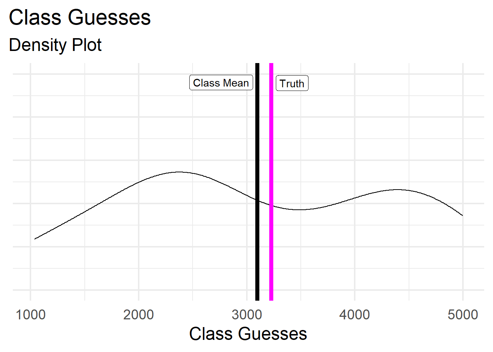
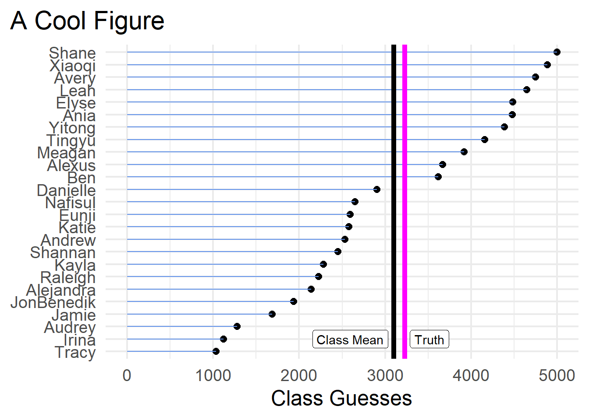
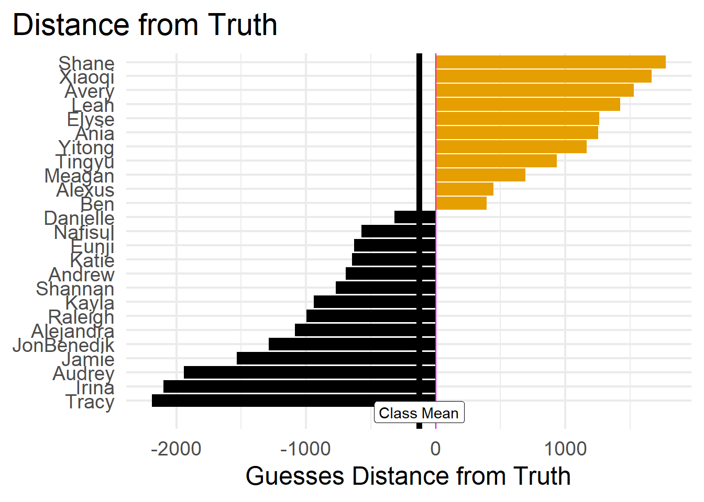
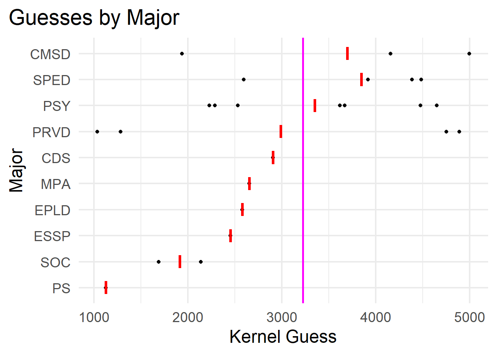
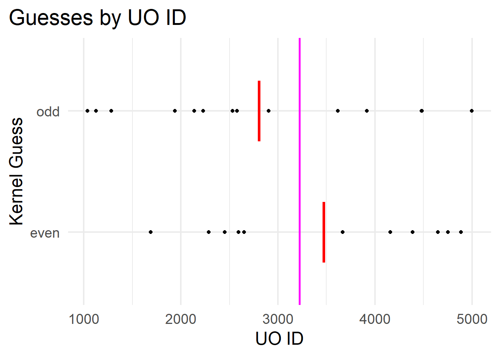

Code
library(tidyverse)
library(here)
library(ggthemes)
library(ggrepel)
library(reactable)
library(parameters)
library(knitr)
theme_set(theme_minimal(base_size = 18))Joe Nese and EDLD 651
September 27, 2023
This is the great popcorn experiment! An under-powered (mediocre) scientific replication of the famous historical event (folktale?) in statistics in which each person in town was asked to guess the weight of the ox. Having no knowledge of oxen, no person correctly guessed the weight, but the average of all guesses was within one pound of the ox’s weight! What an inspiring story of collectivism, the strength in numbers, and the power of data, data science, and statistics! We are better together.
truth <- 3224
dta <- read_csv(here("nopublish", "popcorn", "popcorn_data.csv")) %>%
mutate(id = ifelse(uo_id %% 2 == 0, "even", "odd"),
initials = paste0(str_sub(first, 1, 1), str_sub(last, 1, 2)),
dist = guess - truth) %>%
select(-uo_id)
answ <- tibble(
name = c("Class Mean", "Truth"),
value = c(round(mean(dta$guess, na.rm = TRUE)), truth)
)We used the following packages: ggrepel (Slowikowski 2023), ggthemes (Arnold 2021), here (Müller 2020), knitr (Xie 2023), parameters (Lüdecke et al. 2020), reactable (Lin 2023), and tidyverse (Wickham et al. 2019).
Our hypothesis is that the class average will be more accurate than the guess of any one person.
First, let’s look at a density plot, which shows the distribution of the class guesses.
dta %>%
ggplot(aes(guess)) +
geom_density() +
geom_vline(xintercept = truth, color = "magenta", size = 2) +
geom_vline(xintercept = mean(dta$guess, na.rm = TRUE), size = 2) +
ggrepel::geom_label_repel(data = answ, aes(x = value, y = .0005, label = name)) +
theme(plot.title.position = "plot",
axis.text.y = element_blank()) +
labs(
x = "Class Guesses",
y = NULL,
title = "Class Guesses",
subtitle = "Density Plot"
)
And here is a table of the class guesses. You can filter and sort it!
Here is another cool data visualization.
dta %>%
ggplot(aes(guess, reorder(first, guess), group = 1)) +
geom_point(size = 2.5) +
geom_segment(aes(x = 0, xend = guess, y = first, yend = first), color = "cornflowerblue") +
geom_vline(xintercept = truth, color = "magenta", size = 2) +
geom_vline(xintercept = mean(dta$guess, na.rm = TRUE), size = 2) +
geom_label_repel(data = answ, aes(x = value, y = 2, label = name)) +
theme(plot.title.position = "plot") +
labs(
x = "Class Guesses",
y = NULL,
title = "A Cool Figure"
)
Or perhaps my favorite:
dta %>%
ggplot(aes(dist, reorder(first, dist))) +
geom_col(aes(fill = ifelse(dist > 0, "plus", "minus"))) +
geom_vline(xintercept = 0, color = "magenta", size = .5) +
geom_vline(xintercept = mean(dta$guess, na.rm = TRUE) - truth, size = 2) +
ggrepel::geom_label_repel(data = filter(answ, name == "Class Mean"),
aes(x = value - truth, y = -1, label = name),
min.segment.length = 0) +
ggthemes::scale_fill_colorblind() +
theme(legend.position="none",
plot.title.position = "plot") +
labs(
x = "Guesses Distance from Truth",
y = NULL,
title = "Distance from Truth"
)
Now let’s get to the results…
The actual number of popcorn kernels in the jar was 3,224.
The person closest to the truth was Danielle with a guess of 2,904 kernels - off by 320 kernels!
The class mean was 3,097 (SD = 1,266) - off by 127 kernels.
So to answer our research question…
if(abs(mean(dta$guess, na.rm = TRUE) - truth) < abs(slice(dta, which.min(abs(dist))) %>% pull(guess) - truth)) {
cat("Hypothosis confirmed! The class average was more accurate than any one person!")
} else if (abs(mean(dta$guess, na.rm = TRUE) - truth) > abs(slice(dta, which.min(abs(dist))) %>% pull(guess) - truth)) {
cat(paste0("**Hypthosis rejected! ", slice(dta, which.min(abs(dist))) %>% pull(first), "'s guess was closer than the class average! Replication crisis?**"))
} else if (abs(mean(dta$guess, na.rm = TRUE) - truth) == abs(slice(dta, which.min(abs(dist))) %>% pull(guess) - truth)) {
cat(paste0("What?! It was a tie! ", slice(dta, which.min(abs(dist))) %>% pull(first), "'s guess was the same as the class average!"))
}Hypothosis confirmed! The class average was more accurate than any one person!
Wait! I’m having fun with this, so let’s look at major and ID number!
dta_smry <- dta %>%
group_by(major) %>%
summarize(mean_guess = mean(guess, na.rm = TRUE))
ggplot(dta, aes(guess, fct_reorder(major, guess), group = major)) +
geom_point() +
stat_summary(fun = "mean",
geom = "crossbar",
width = .5,
color = "red") +
geom_vline(xintercept = truth, color = "magenta", size = 1) +
labs(
x = "Kernel Guess",
y = "Major",
title = "Guesses by Major"
) +
theme(plot.title.position = "plot")

Let’s run (bad) a regression!
| Parameter | Coefficient | SE | CI_low | CI_high | p |
|---|---|---|---|---|---|
| (Intercept) | 445.8 | 1441.6 | -2646.2 | 3537.8 | 0.762 |
| majorCMSD | 538.7 | 1529.4 | -2741.6 | 3819.0 | 0.730 |
| majorEPLD | -326.0 | 1857.4 | -4309.7 | 3657.7 | 0.863 |
| majorESSP | -1216.8 | 1950.2 | -5399.5 | 2965.9 | 0.543 |
| majorMPA | -1017.8 | 1950.2 | -5200.5 | 3164.9 | 0.610 |
| majorPRVD | -297.9 | 1498.2 | -3511.1 | 2915.3 | 0.845 |
| majorPS | -1781.0 | 1857.4 | -5764.7 | 2202.7 | 0.354 |
| majorPSY | 118.4 | 1427.0 | -2942.2 | 3178.9 | 0.935 |
| majorSOC | -1373.9 | 1635.8 | -4882.3 | 2134.5 | 0.415 |
| majorSPED | 558.9 | 1498.2 | -2654.4 | 3772.1 | 0.715 |
| idodd | -765.8 | 594.5 | -2040.8 | 509.2 | 0.219 |